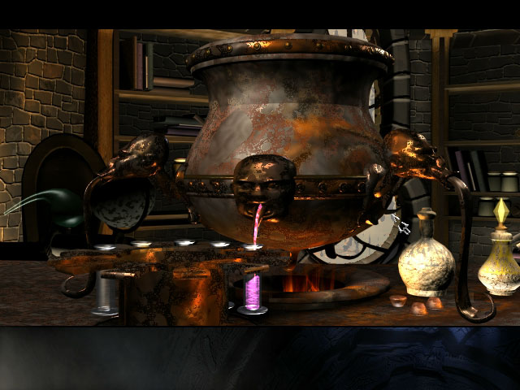
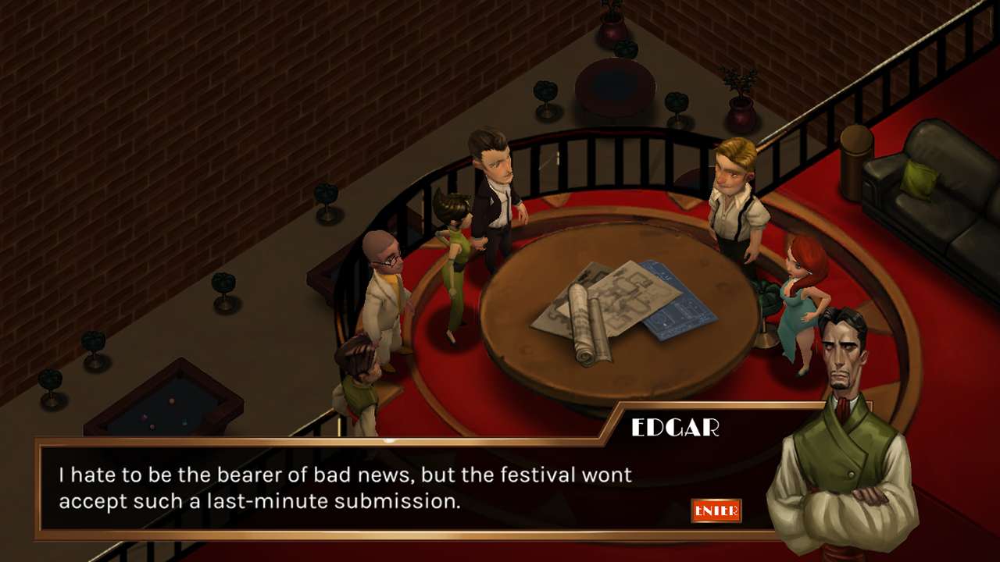
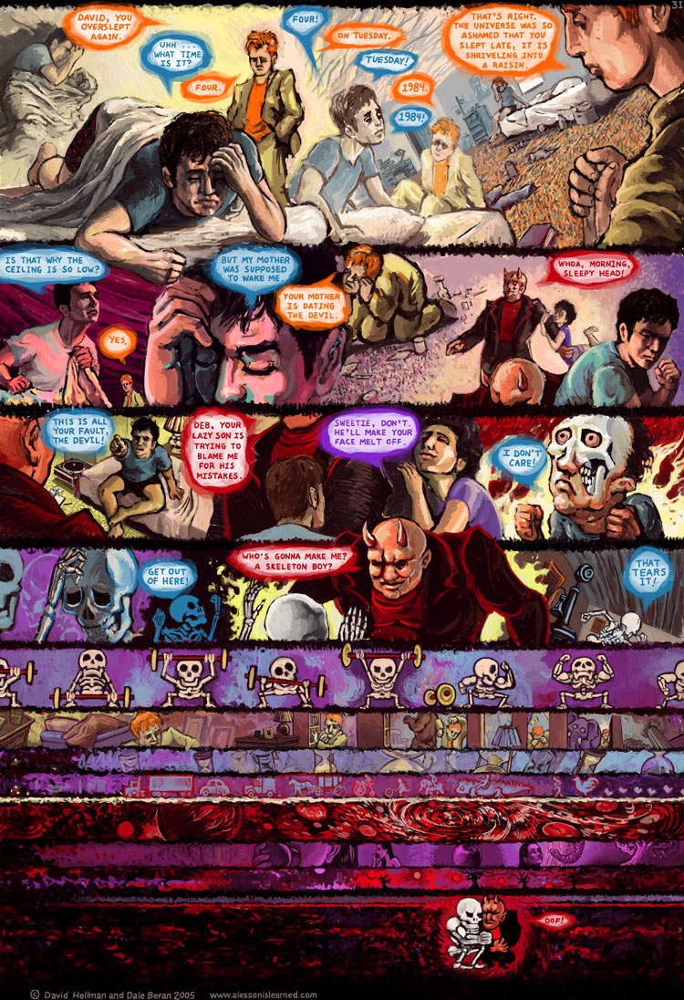
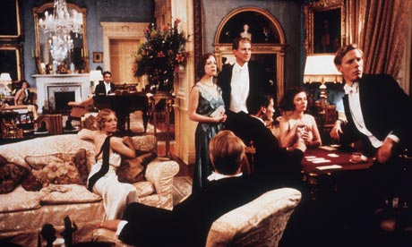
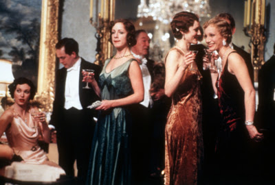

The moment you enter the room, you know that something has gone wrong. Carlos is splayed out on the floor, eyes wide and unblinking, his right arm twisted at an impossible angle. You were sure that Christopher murdered Carlos in the other timeline, but you stopped him. Unless... Before the flash of realization passes, you're already leaping back through time to prevent the crime. If Beatrice hadn't spoken to Christopher and Katherine before the attack, none of this would have happened.
Imagine a game that changes based on how you play it. A game that tells a story in which everything that happens makes perfect sense because of what you've done. The events in the story are not predetermined; they evolve as you travel back and forth in time in order to change the ultimate course of events. You have free reign to change what has happened by interacting with characters that have motivations and behaviors inspired by classic Agatha Christie mystery fiction -- the kind of fiction that features characters trapped in a mansion, having sordid affairs, and murdering one another over petty squabbles.
You play as a time traveler thrust into this mess and need to figure out how to shape events so that they play out in your favor. Maybe you decide to play the hero, saving lives by preventing characters from meeting under unfortunate circumstances. Perhaps you thrive on chaos and want to see if you can make all of the mansion's inhabitants attack one another.
It's all up to you.
Time mansion is a point-and-click puzzle adventure game that puts you in control of the story. No longer is the outcome a linear slog throug pre-scripted sequence designed by writers hundreds of miles away for "all audiences." Instead, each short playthrough is unique and won't have been experienced before by you or anyone else in the world.
Most games treat gameplay and stories as distinct and opposing forces. most games melded with stories tend to be Frankenstein monsters. Players tend to either skip the story or skip the game. - A Theory of Fun for Game Design pg 128 Solving puzzles like this one is the core gameplay in adventure games like The Longest Journey, but the narrative is primarily conveyed through conversations and video cutscenes. A common approach is gradually revealing sections of a story upon completion of gameplay challenges.
Existing games are mostly linear (come up with some examples)
Existing games mostly focus on long play times, but once you're done, you don't want to play again unless you are a completionist and want to get some "achievements" the game designers put in to make the game seem richer and more valuable.
There is a place for games that are short but can be played again and again (think of board games that change based on the people you play them with and the strategies those people use)
Computer games have the benefit that they can be played alone and that people don't have to enforce rules themselves. Complex rules are not well-suited to board games
Games let you explore situations and rule systems without real consequences
How is this different from MoonligtersThe Moonlighters, Quicksilver: Infinite Story -- those games require a lot of authorial content. This only requires a DB of reactions.
Time Mansion explores the concept of long-term consequence chains. Reminiscent of time travel movies like Back to the Future. Real butterfly effect. Also, concept of Rashomon -- that your perspective changes the way you interpret a story. Maybe you think someone is a villain, but you realize that their actions would never have happened if someone else hadn't done something earlier on.
Time Mansion plays like a first person adventure game in the style of Myst. The mechanics consist of
Mechanically, Time Mansion is very simple. The core of the game is uncovering and manipulating chains of causality -- there is no place for first-person-shooter style movement controls (is there, though? Not sure if it might be possible to emphasize the theme of temporal freedom with movement freedom, maybe intentional contrast).
The only advantages you have over the computer-controlled characters is that you have temporal awareness -- you know what other characters will do if you don't change anything -- and you are more capable of making intelligent decisions than the characters in the game.
Time Mansion's unique approach to storytelling ensures that every action you take as a player directly affects the story. Something as simple as delaying a character from leaving a room can have far-reaching consequences in the life, death, and relationships of other individuals in the game.
Elegant rules allow players to focus on the experience of play rather than on the logic of the rules. Designing meaningful play involves building discernible and integrated relationships between action and outcome into all levels of the rules of a game.- Rules of Play: Game Design Fundamentals pg 139 Because of the time travel mechanic, the story needs to be completely deterministic: unless you intervene, a given story should always have the same outcome no matter how often you travel back in time. Without this property, you will come to suspect that your actions are meaningless. In order for a game to be fun to play, it needs to empower the player.
The heart of Time Mansion is the story simulator: a system that determines the behavior of a set of characters with initial relationships, personalities, emotions, and locations within a world over time.
I've created a prototype of the story simulator for you to try out (try clicking the "New Story" button):
Characters in Time Mansion have fixed traits and fluid states that define their behavior.
In the simplest form of simulation, the traits simply specify their gender preferences for amorous relationships:
Character states are more complex, including
When two characters meet in the same room, their states change based on their traits and current states as the result of an action. In the story simulator prototype, characters can engage in the actions
These actions are highly contextual. For example, in the prototype, character A will only murder character B if they are both alive, there are no other individuals in the room, and they are enemies.
One of the biggest challenges in creating Time Mansion will be balancing the need to make them complex enough to create compelling stories and simple/obvious enough for players to predict.
When we think of stories, we usually think of explicit narratives. In novels, these narratives are conveyed purely through words. In films, narratives are traditionally expressed through a combination of moving images, music, and verbal dialog.
However, words are not essential to storytelling. Consider the short story Luxo the Lamp created by Pixar. That story conveys a simple narrative without any spoken dialog whatsoever. The images and sounds tell the story. Interpretive dance is another medium that conveys narrative without words.
Wordless stories can be just as powerful as stories that use elegant language (something that is conspicuously missing from many game stories today). They have the additional benefit that they are more universal between cultures.
Computers are notoriously bad at forming compelling sentences. Well-written dialog requires lots of up-front work by writers and inevitably leads to strictly or largely linear stories. Mention Quicksilver: Infinite Story
Time Mansion's stories will avoid this problem; the stories will be told using simple body language and iconic imagery.
Time Mansion's theme of intrigue in a sealed manor will be heavily reflected in its art direction.
The game will feature a layered, painterly art style inspired by David Hellman's A Lesson Is Learned. Its palette and visual style will be drawn from opulent 1930s decor as portrayed in films like Gosford Park, with an emphasis on warm, vivid reds, golds, and browns set against blue-tinted blacks, greys, and whites.  
Time Mansion will feature a dynamic soundtrack that changes based on player-character and character-character interactions. For example, the soundtrack will become more aggressive when characters insult one another.
The audio demo for the canceled game Subversion demonstrates this type of soundtrack:
Time Mansion's soundtrack will likely feature classic orchestral or jazzy music with emotional overtones.
Time Mansion cannot be fully specified without
Time Mansion is designed to appeal to wide audiences (male and female) and ideally will not require any prior gameplay experience because of its simple mechanics, point-and-click interface, and emphasis on social interactions over fast-paced action and hand-eye coordination.
It's initial audience will primarily include fans of point-and-click adventure games and mystery fiction.
Because the game's themes include murder and romance, its target demographic is players 13 and up.
Time Mansion doesn't require a platform with a powerful processor or graphics card. It is best-suited to platforms that are associated with with medium or large screens, two dimensional input methods, and short playsessions. It will initially be developed for mobile tablets (iOS and Android) and low-end computers (Windows, Mac OS X, and Linux).